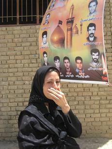

|
|
زنان قربانيان آتش سوزي شازند: غرامت می خواهیم
شنبه11 خرداد 1387
سرمایه ، کانون زنان ایرانی : خبرنگاران اعزامي به شازند اراك - ترانه بني يعقوب و فريده غائب: پنجشنبه، نهم خردادماه ميدان اصلي شهر شازند اراك چهره ديگري به خود گرفته است. همه چيز سياه و غمگين است. بيرق هاي سياه، مردم سياه پوش و صداي ضجه هاي پي درپي زنان و مرداني كه در مصلاي كوچك اين شهر در سوگ 26 جواني نشستند كه زنده زنده در آتش سوختند.

يكشنبه هفته گذشته (چهارم خرداد) كارخانه هاي كيمياگستران سپهر و كيمياگران امروز كه كارخانه هاي مواد پتروشيمي و شيميايي بودند، در شهرستان شازند كه در 33 كيلومتري جنوب غربي اراك واقع شده، منفجر شد و 26 نفر از كارگران آن كارخانه زنده زنده در آتش سوختند و 50 نفر نيز با جراحت هاي عميق روانه بيمارستان شدند. وارد حياط كوچك مصلاي شازند كه مي شوي، جواني سياه پوش روي زمين نشسته و به آسمان خيره شده، ناي حرف زدن ندارد. همراهش مي گويد: «برادرش را در آن آتش سوزي از دست داده و به خاطر شوك زياد دهانش براي حرف زدن باز نمي شود.»
اطرافيانش به جاي او روز واقعه را توضيح مي دهند، كساني كه خود نيز از كارگران آن كارخانه بوده اند: «برادرش، محمدعلي جعفري فقط 26 سال داشت و در حالي جسد سوخته و سياه شده اش را به او تحويل داده اند كه چيزي از او باقي نمانده بود و تنها از روي ساعت مچي موفق شدند جسد را شناسايي كنند.»
هرچند آنها مي گويند دليل دقيق آتش سوزي را هنوز مسوولان اعلام نكرده اند اما در روز حادثه آتش نشاني بسيار دير در محل حادثه حاضر شد. يكي از كارگران كارخانه كه جان سالم به در برده است مي گويد: «شهرك صنعتي به آن بزرگي آيا نبايد يك ايستگاه آتش نشاني داشته باشد؟» به گفته او تنها سيستم ايمني اين كارخانه سه كپسول كوچك ضدحريق بوده و هيچ وسيله ايمني براي كارگران در نظر گرفته نشده است؟ كمي آن طرف تر در گوشه حياط مصلي، زني با صداي بلند گريه مي كند و كودك خردسال در آغوش اش را نشان مي دهد: «اين عارف يك ساله، فرزند ابوالفضل اسفندياري است.»
كودك لباس قرمز رنگي بر تن دارد و با بهت و حيرت، فريادهاي بي پايان اطرافيانش را مي نگرد. مادربزرگ عارف با لحن تلخي مي گويد: «بر تن عارف لباس قرمز پوشانده ام، چون هنوز برايش زود است كه سياه بپوشد.» و بعد به چادر مشكي اش اشاره مي كند: «جنازه پدرش درست مثل اين چادر، سياه شده بود.»
ابوالفضل اسفندياري، 26 ساله فقط 10 روز بود كه پس از ماه ها بيكاري در كارخانه كيمياگستران سپهر شازند مشغول به كار شده بود هيچ يك از اطرافيان ابوالفضل نمي توانند روزي را كه او از خوشحالي پيدا كردن يك شغل در پوستش نمي گنجيد فراموش كنند، آن شادماني خيلي زود تمام شد؛ يعني فقط 10 روز.
مريم، همسر 23 ساله ابوالفضل كه نگاهش به كودك يك ساله اش عارف است، هيچ نمي گويد. او در سكوتي عميق فرو رفته است. مادر مريم مي گويد: «چه زود دخترم بيوه شد.» و بعد با صدايي آرام نجوا مي كند: «نمي دانم بر سر دخترم و تنها كودكش چه خواهد آمد؟»
ماه ها بيكاري ابوالفضل، مريم و تنها كودكش را كه در كلبه اي چوبي در روستاي هفته حوالي شازند زندگي مي كنند، آزار داده بود. مريم مدام نگراني هاي اطرافيان را درباره آينده اش مي شنود و فقط با نگاهي مبهوت بيشتر در سكوت دنباله دارش فرو مي رود.
ابوالفضل و احمد اسفندياري هر دو از كارگران قرباني حادثه انفجار كارخانه بودند و شوهر خواهرشان نيز با 50 درصد سوختگي در بيمارستان اصفهان به سر مي برد. سه قرباني در يك خانواده.
هرچند هيچ يك از اين خانواده داغدار و حتي همسر باردارش تاكنون حالي از او كه در بيمارستان اصفهان بستري است، نپرسيده اند چون دو عزيز ديگرشان را از دست داده اند.
صداي «روله - روله» و «برار - برار» از هر گوشه مصلاي شهر شازند به گوش مي رسد. چند زن كه در راهروي مسجد روي پتويي سبز رنگ نشسته اند فرياد «برار - برار» سر مي دهند.
زني با فريادهاي بلند مي گويد: «برادر ناكامم فقط 23 سال داشت دو متر قدش بود اما زماني كه جسد سوخته اش را به ما تحويل دادند فقط نيم متر از قدش باقي مانده بود.»
اطرافيانش كه همه از اقوام نزديك شان هستند فرياد و ناله سر مي دهند: «از روي چهار دندان عاريه اش توانستيم جسدش را از ديگران تشخيص دهيم.»
خواهر سرش را با گريه تكان مي دهد: «برادر بدبختم سه ماهي بود كه حقوق نگرفته بود، غذايش را هم هر روز از خانه مي برد، حتي لباس كار هم نداشتند و خودشان لباس شان را تهيه مي كرد.»
يكي از اقوامش در ميان فريادهاي بلند اين خواهر داغدار به آرامي مي گويد: «محمد ماه ها بيكار بود و با اينكه تخصص خاصي نداشت خيلي زود در اين كارخانه به عنوان جوشكار استخدام شد چطور ممكن است به همين راحتي شغلي تخصصي را به يك جوان بي تجربه بدهند و او را در قلب كارخانه و در مهم ترين قسمت آن استخدام كنند.»
در ميان همهمه زنان داغدار، يكي از خواهران محمد جعفري گريه اش را كنترل مي كند، با بغضي در گلو روزهاي كاري برادرش را كه روزي از دهانش شنيده بود، بازگو مي كند: «محمد مي گفت كارش جوشكاري در قسمتي است كه پر از مخزن هاي الكل و مواد شيميايي همچون جوهرنمك و ساير اسيدهاست.»
محمد هميشه با خنده مي گفت يك جرقه آتش همه ما را پودر مي كند.»
به گفته خواهر محمد، او در كنار مخازن بزرگ اسيد و مواد شيميايي جوشكاري مي كرد و چند وقتي مي شد كه از نشت يكي از مخازن مواد اسيدي خبر داشت و مي گفت بارها اين نكته را با مسوولان و كارفرماي بخش گوشزد كرده ام، اما مسوولان هر بار بي اعتنا به آن به ما اطمينان داده اند كه هيچ مشكلي نيست.»
به گفته شاهدان ماجرا، انفجار در كارخانه كيمياگستران در سه مرحله اتفاق افتاد. يكي از مخازن اصلي كه از مدت ها پيش نشت مي كرد در اثر يك جرقه منفجر مي شود و دود سفيد رنگي محوطه اين كارخانه و كارخانه هاي اطراف را پر مي كند و بعد از آن دومين و سومين انفجار با صداي مهيب به دنبال آن رخ مي دهد و بلافاصله تمام وسايل كارخانه و تجهيزات اطراف كارخانه آتش مي گيرند.
كارگراني كه دور از اين مخازن به كار مشغول بودند با ديدن دود سفيد رنگ و صداي انفجارها فرار مي كنند. اما كساني كه در كنار اين مخازن مشغول به كار بودند در آتش بزرگ ناشي از انفجار مخزن ها مي سوزند.
عبدالله جودكي، تنها كارگري است كه در بيمارستان وليعصر شهر اراك بستري است و بقيه مصدومان به دليل شدت و عمق جراحات وارده به بيمارستان هاي تهران و اصفهان منتقل شده اند.
بخش سوختگي بيمارستان وليعصر اراك در زيرزمين كوچك و تاريكي واقع شده است. عبدالله 30 ساله كه ميزان سوختگي اش را 38 درصد اعلام مي كند از نزديك ترين دوستانش مي گويد كه يا سوختند يا اكنون با سوختگي هاي خيلي شديد در بيمارستان به سر مي برند.
تمام صورت و دست هاي عبدالله با باندهاي قهوه اي رنگ پيچيده شده و از روز حادثه با هيجان حرف مي زند. هر چند هر بار كه مي خواهد دستانش را تكان دهد جراحات مانعش مي شوند: «آن روز در كارخانه بودم كه ناگهان دود سفيدرنگ را ديدم خيلي زود فهميدم كه اتفاقي افتاده و پا به فرار گذاشتم. براي فرار لازم بود از روي ميله ها بپرم اما نمي دانستم ميله ها از شدت حرارت گداخته شده اند، دستانم را روي ميله ها گذاشتم و سوختم.»
بغض گلويش را گرفته است. او در حين فرار صداي فرياد دوستانش را كه مي گفتند «سوختيم - سوختيم» مي شنيد اما كاري از دستش برنمي آمد چرا كه بخش مركزي كارخانه در آتش شعله ور بود جايي كه 12 نفر از دوستان نزديكش در آنجا فرياد سوختم را سر داده بودند.»
چهره عبدالله سياه شده است: «هنوز هم مطمئن نيستم زنده بمانم. رنگ و رويم را ببينيد آن قدر مواد شيميايي در محيط و فضاي كارخانه بود كه آن را استنشاق كرده ام و معلوم نيست بعدها چه بر سرم مي آيد.» عبدالله اميدوار است كه كارفرمايان هزينه هاي درمانش را بپردازند هر چند مددكار بيمارستان اعلام مي كند كه تاكنون حتي يك قران براي هزينه هاي درمان او و ديگر همراهانش پرداخت نشده است.
عبدالله شش سال است در اين كارخانه فعاليت مي كند، بيمه است اما تعداد زيادي از جواناني كه تازه به استخدام اين كارخانه درآمده، بيمه نشده بودند و از اين بابت بازمانده هايشان اظهار نگراني مي كنند.
كارخانه كيمياگستران و چندين كارخانه ديگر، در جاده اي معروف به جاده بازند قرار دارند. كارخانه اي كه از آن جز مخزن هاي سياه رنگي كه نصف شده اند، ساختمان هاي سياه و كاملاً سوخته و شيشه هاي شكسته چيزي باقي نمانده است. پنج روز از انفجار در اين كارخانه مي گذرد اما هنوز بوي تند الكل و مواد شوينده همراه با بوي دود و سوختگي به مشام مي رسد. چند دقيقه اي كه قدم مي زني، به سرفه شديد مي افتي كه ناشي از استنشاق اين گازهاست.
اين شهرك صنعتي توسط چند مامور نيروي انتظامي حفاظت مي شود و تا بومي ها به ويژه بازماندگان حادثه به محل نزديك نشوند. بيشتر آنها ماسكي بر دهان دارند همين موضوع بسياري از خانواده هاي مصدومان را نگران مي كند: «اگر هم عزيزانمان در اثر سوختگي نميرند اما استنشاق اين مواد اسيدي، به ريه ها آسيب مي زند و جانشان را خواهد گرفت.»
شاهدان مي گويند احد غلامي به خاطر استنشاق اين مواد جانش را از دست داده است. احد غلامي، يكي از كشته شدگان اين حادثه با اينكه سوختگي اش اندك بوده، حتي در راه انتقال به بيمارستان با همسرش صحبت كرده و از سلامتش خبر داده اما به محض رسيدن به بيمارستان به دليل ورود مواد شيميايي به ريه اش سرش متورم مي شود و جان مي سپارد.
سرنوشت سه قلوها و فرزندان قربانيان چه مي شود
ميني بوس هاي آبي رنگ كه پر از دغداران اين حادثه است به سمت روستاي هفته مي روند. روستايي كه بيشترين قرباني را داشته است. 11 جوان هفته اي در اين حادثه در آتش سوختند. همچنين ساير قربانيان حادثه از روستاهاي بازند، آستانه، عمارت، واشه و شهر شازند بودند.
مادر داغديده احمد و ابوالفضل اسفندياري بي تاب تر از ديگران است. از فقر و بدبختي هايش مي گويد. از اينكه دو فرزند از دست داده اش را با هزارها مصيبت و فقر بزرگ كرده است و به قول خودش آنها را به اينجا رسانده بود: «با چهل سال نوكري و كلفتي خودم و همسرم فرزندانمان را بزرگ كرديم. لباس هاي خودم را مي بريدم و با تكه هايشان براي اين بچه ها بلوز و شلوار مي دوختم. از جدا كردن كامواي لباس هاي قديمي زمستاني ديگران، لحاف و تشك مي دوختم، موقع غذا خوردن ظرف غذا را جلوي فرزندانم مي گذاشتم و اگر چيزي باقي مي ماند خودم مي خوردم.»
اين مادر كه همزمان دو پسرش را در اين حادثه از دست داده، بس كه فرياد كشيده با صدايي گرفته و بغض آلود حرف مي زند: «هرچند از دست دادن فرزندانم دردناك است اما مي گويم راحت شدند چون حتي يك روز با شكم سير سر بر بالين نگذاشته بودند.»
در همين لحظه ميني بوس آبي رنگ از كنار قبرستان محل دفن اين يازده نفر مي گذرد و زنان و مردان هفته اي با اشاره به اين محل هر كدام خاطره هايشان را از عزيزان شان مرور مي كنند. عصمت خواهر داغدار با دستانش از دو برادرش خداحافظي مي كند و بعد بيهوش بر كف ميني بوس مي افتد.
خواهر نوجوان محسن گلستاني خيره به اين قبرستان، قبر برادرش را نشان مي دهد: «ماه آينده عروسي محسن بود. با ذوق و شوق هر روز برايم تعريف مي كرد كه روز عروسي اش چه لباسي مي خواهد بپوشد و چه كارها مي خواهد انجام دهد.» با اين حرف ها، فرشته 23 ساله هم اشك ريزان از محسن همسرش مي گويد كه يك سال پيش به عقدش درآمده بود: «محسن از زيباترين پسرهاي روستاي هفته بود. با اينكه بارها از ناايمن بودن كارگاه گفته بود اما به خاطر تامين هزينه هاي عروسي مان، كار كردن در آنجا را تحمل مي كرد. چنان سرفه هاي دردناكي مي كرد كه هرگز نمي توانم فراموش اش كنم.»
هيچ يك از اهالي هفته مادر باردار سه قلوها را فراموش نمي كنند. همسر هادي قرباني زاده، ده روز ديگر سه قلوهايش را به دنيا مي آورد. سه قلوهايي كه هرگز پدرشان را نديدند. چقدر او همسرش را در اين باره سه قلو ها دلداري داده بود. گفته بود خداوند روزي اين سه دختر را مي رساند. اهالي هفته با نگراني از هم مي پرسند چه بر سر اين سه كودك و مادرشان مي آيد.
غرامت مي خواهيم
همه اعضاي خانواده داغدار اسفندياري ها در خانه الياس برادر بزرگ تر ابوالفضل و احمد جمع شده اند.
الياس عارف يك ساله و علي سه ساله را كه پدرش به خاطر سوختگي در بيمارستان اصفهان است، در آغوش گرفته. او با عصبانيت از مراسمي كه پنجشنبه ظهر در مصلاي شازند برگزار شد سخن مي گويد: «فكر مي كرديم ما را دعوت كرده اند تا دلداري مان دهند اما نه تنها دلداري وجود نداشت بلكه مسوولان مي خواستند به ما بفهمانند كه بايد سكوت كنيم و موضوع را فراموش كنيم.»
بعد به دو كودك در آغوشش اشاره مي كند: «آينده اينها چه خواهد شد؟» و به مريم، همسر ابوالفضل نگاه مي كند كه همچنان با سكون به گوشه اي زل زده است. الياس مي گويد: «مسوولان بايد از اينها حمايت كنند. ما غرامت مي خواهيم.»
روستاي هفته پنج روز است كه در سكوت غمگيني داغدار جوانانش است. پنج روزي است كه كسي در اين روستا لبخند نزده و هيچ كاري انجام نداده است. ميدان اصلي روستا مزين به عكس اين يازده تن است: «ابوالفضل اسفندياري، احمد اسفندياري، محمد طاهري، مهدي ملكي، هادي قرباني زاده، داود كريمي، احد غلامي، محمود گلستاني، اميد هفته اي، فريبرز هفته اي و صادق برزگر.»
براي جوانان ناكام به جاي حجله به رسم هفته اي ها، پارچه اي قرمز بر چارپايه اي كوچك گذاشته اند. آيينه، حنا و گل نشان از ناكامي اين جوانان دارد. جواناني كه به كوچك ترين آرزوهايشان هم نرسيدند. ديوارها پر از اعلاميه هاي ترحيم و تسليت است. هفته اي ها همه غمگين اند، يكي از زنان هر چند هيچ يك از نزديكانش را از دست نداده اما با گلايه مي گويد: «بايد يك روز براي از دست رفتگان عزاي عمومي اعلام مي شد اما مسوولان اين كار را هم نكردند پس لااقل به فكر كودكان و زناني باشند كه اين حادثه همه زندگي شان را گرفت.»
این مطلب در روزنامه سرمایه نیز منتشر شده است